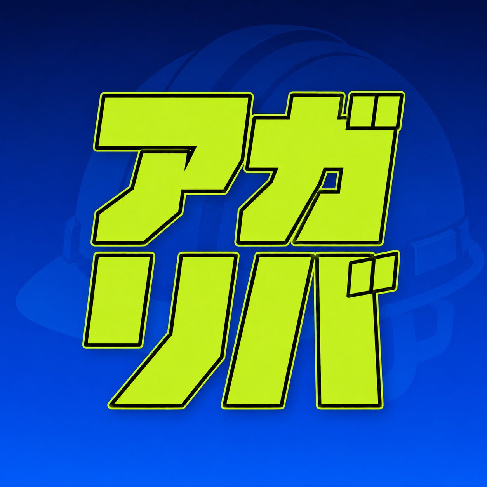

アガリバライン作業の経験は、エンジニアへの切符。
機械設計エンジニア、ITエンジニアへも。
働きながら、市場価値を上げていく。
※求職者の方は完全無料です（公式LINEから）
同じライン作業の繰り返し。
スキルがつく実感がない。
上がっていく未来図が描けない。気づけば時間だけ過ぎていく。
夜勤も残業もこなしてるのに、手取りはずっと横ばい。
正社員になりたいけど、
どう動けばいいか分からない。
ホワイト工場・大手正社員・好条件。今の経験を活かして、環境ごと上げる。
製造経験を武器に、機械製造エンジニア→設計・開発へ。ものづくりを極める道。
働きながら学んで職種転換。会社の学習・資格補助で、市場価値を一気に上げる。
あなたの経験は、ムダじゃない。
極める道も、広げる道も、選べる。
機械製造エンジニア（未経験から）
機械設計アシスタント
ITエンジニア（社内研修あり）
※条件は求人により異なります。最新の求人は公式LINEでご案内します。
T太さん24歳・派遣の組立
「自分には現場しかない」と思ってた。
製造経験を活かして、正社員のエンジニアに。
K介さん27歳・ライン作業
機械製造エンジニアから設計へ。ものづくりを極める道で、市場価値が上がった。
Y斗さん23歳・検査
給料をもらいながらIT学習。会社の補助を使って、ITエンジニアへチャレンジ。
※個人の実績です。成果には個人差があります。
製造の経験は、ちゃんと価値になる。ゼロ扱いせず、活かせる現場を探す。
極める道も、広げる道も。押し付けず、あなたの“上がり方”を一緒に決める。
現実も正直に伝える。そのうえで、最後まで一緒に勝ち筋を考える。